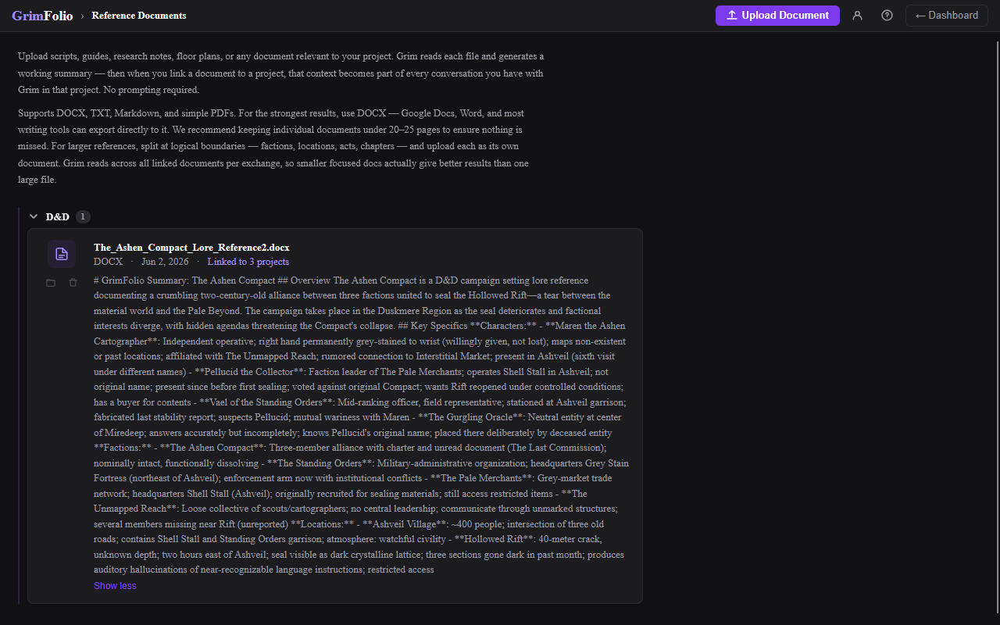
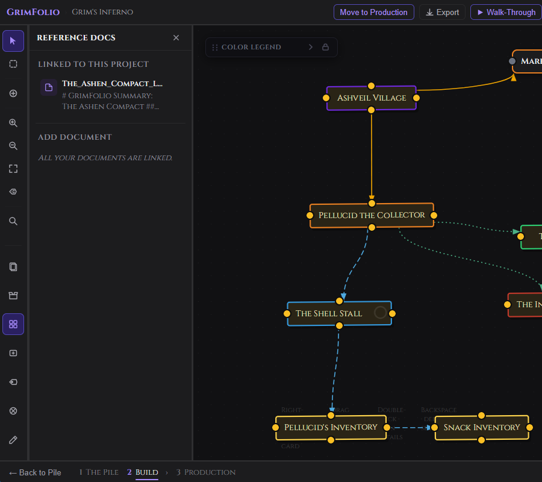

Reference Documents
Reference documents are files you upload to GrimFolio and attach to projects so Grim can read them. A lore bible, a floor plan, a script, a vendor quote, a game system rulebook — any document relevant to what you are building. Once linked to a project the document's content becomes part of Grim's context in every conversation there. No manual pasting. No prompting required.
The Documents Manager
Reference Documents is a standalone section accessible from your Dashboard library cards. It is the global library for all documents across all your projects.

Uploading
Click Upload Document to open a file picker. One file at a time.
Supported formats: DOCX, TXT, Markdown (.md), and PDF.
After upload the document appears at the top of the list. Grim begins reading it immediately. While processing the row shows "Grim is reading this..." The page updates automatically when processing is complete.
When done Grim generates a working summary and saves it to the document. The summary appears in the row clamped to 3 lines with Show more / Show less controls.
If no text could be extracted the row reads: "No text could be extracted. Try uploading as DOCX instead."
Document Size and Structure
Keep individual documents under 20 to 25 pages. For larger references split at logical boundaries — factions, locations, acts, chapters. Upload each as its own document.
Document Rows
Each document in the list shows:
| Element | What it shows |
|---|---|
| Filename | Full name with extension. |
| File type badge | Uppercase extension: DOCX, PDF, TXT, MD. |
| Upload date | When the file was added. |
| Link count | "Linked to N projects" if linked anywhere. |
| Summary | Grim-generated summary, processing status, or extraction failure message. |
| Folder button | Opens the folder assignment dropdown. |
| Delete button | Opens a confirmation dialog before deletion. |
Deleting a document is permanent. It is removed from all linked projects and cannot be undone.
Folders
Documents can be organized into named folders. Folders are collapsible in the list and carry over into the project panel picker so you can find documents quickly when linking.
| Action | How |
|---|---|
| Move a document to a folder | Click the folder button on the document row, choose a folder or select Unfiled. |
| Create a new folder | Click the folder button, then "New folder...", type a name, press Enter. |
| Rename a folder | Double-click the folder name in the list header. |
| Delete a folder | Click × on the folder header — all documents in it move to Unfiled. |
Documents without a folder appear under an Unfiled section at the bottom when named folders exist.
Linking Documents to a Project
Linking tells Grim which documents belong to a project. A document can be linked to multiple projects with no duplication — the same file serves all of them.
From inside a project — Open the Reference Docs panel via the left toolbar. The panel shows linked documents and a picker of everything in your library not yet linked to this project. Click any unlinked document to link it. Click × on a linked document to unlink it. Documents are grouped by folder in the picker — click a folder to expand it.

A Manage Reference Documents → link at the bottom of the panel navigates to the full Documents Manager without leaving the project flow.
Linking at Project Creation
When creating a new project the Create Project modal includes an optional Start Grim with a reference document section. Select a document here and Grim walks into the very first conversation already knowing what is in that file. Documents are grouped by folder in this picker the same way as the in-project panel.
How Grim Uses Linked Documents
When Grim opens a conversation on a project that has linked documents it reads them. The opening observation and any starter cards come from the document content directly — not from the project name, not from a guess.
This is the difference between:
"A haunted house — are we going literal with water, or is the drowning metaphorical?"
and:
"Pellucid voted against sealing the Rift the first time — which means what he's doing now isn't sabotage, it's completion."
The second only happens when the document is there.
How Grim Reads Documents
GrimFolio splits documents into overlapping chunks of roughly 1,500 characters and embeds each one. On every Grim exchange, only the chunks semantically relevant to your current message are retrieved and injected into context.
A message about your budget injects nothing from the lore bible. A message about a specific character surfaces the two or three chunks that mention them. This keeps token usage proportional to what is actually relevant rather than injecting the entire document on every exchange.
Small documents under 6,000 characters skip chunking entirely and inject directly.